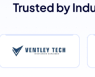
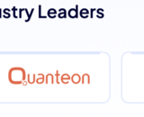
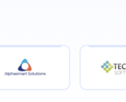

We combine AI, software engineering, cloud, data, and automation so technology initiatives become useful operating capabilities—not disconnected experiments.
Enterprise GenAI, RAG, agentic AI, computer vision, and AI-enabled workflows grounded in real systems and data.
Explore AI →Modern data pipelines, integration, analytical foundations, quality, and observability for AI and business intelligence.
Explore Data →Dashboards, forecasting, anomaly detection, text analytics, and decision intelligence connected to measurable outcomes.
Explore Analytics →Application modernization, cloud engineering, digital experience, integration, and process automation.
Explore Transformation →Specialized engineering, data, cloud, AI, and architecture capacity that integrates with existing delivery teams.
Explore Talent →Operate applications, data pipelines, automations, and intelligent systems with monitoring and continuous improvement.
Explore Managed Services →Start with one use case, prove the value, then expand. Each pattern is adaptable to your environment, users, systems, and governance model.
Unify alerts, operational context, incident creation, department coordination, notifications, and remediation tracking in one intelligent operating layer.
Ground AI assistants in approved enterprise documents, systems, procedures, and structured data with access controls and measurable retrieval quality.
Turn cameras and imagery into operational signals using computer vision, edge inference, tracking, and event-driven alerting.
Combine maps, satellite imagery, asset data, and change detection to understand what changed, where it changed, and what action may be required.
We shape each solution around the systems, users, risk profile, workflows, and decision cycles of the environment it serves.
Support safer, faster, and more coordinated operations through AI command centers, computer vision, geospatial intelligence, workflow automation, and decision-support systems.
Improve visibility and automation across network operations, service workflows, customer interactions, and high-volume data environments.
Modern data, automation, AI assistants, and digital platforms can improve operational visibility and employee experience while preserving appropriate controls.
Use secure data, governed AI, risk intelligence, and automation to strengthen operations while keeping review, evidence, and auditability visible.
Connect AI, cloud, applications, automation, and data into a flexible technology foundation built around business workflows and customer experiences.
The delivery model keeps business value visible from first conversation through production operations.
Clarify the business problem, users, constraints, systems, and measurable outcome.
Create the architecture, data flows, user experience, controls, and delivery blueprint.
Validate the riskiest assumptions with a focused solution using representative data and workflows.
Productionize with integrations, security, observability, resilience, ownership, and support.
Perspectives on the architecture and operating choices behind AI, data, automation, and modern digital platforms.
Why AI becomes more useful when it is connected to approved knowledge, systems, tools, and measurable workflows.
Read perspective →The choices that determine retrieval quality, security, evaluation, observability, and user trust.
Read perspective →Where edge inference can improve latency, bandwidth use, privacy boundaries, and resilience.
Read perspective →Why metadata, lineage, quality, access controls, and integration matter before scaling AI workloads.
Read perspective →Tell us the problem. We’ll help shape a practical path from architecture and prototype to a dependable production capability.